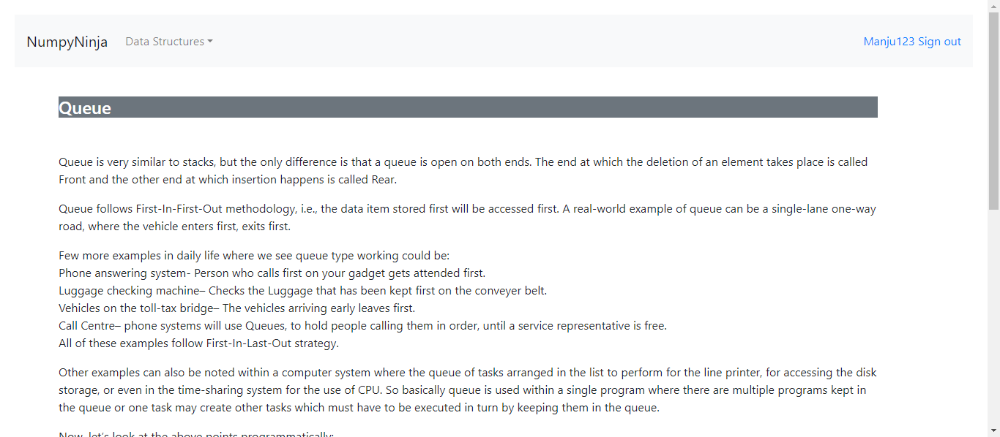
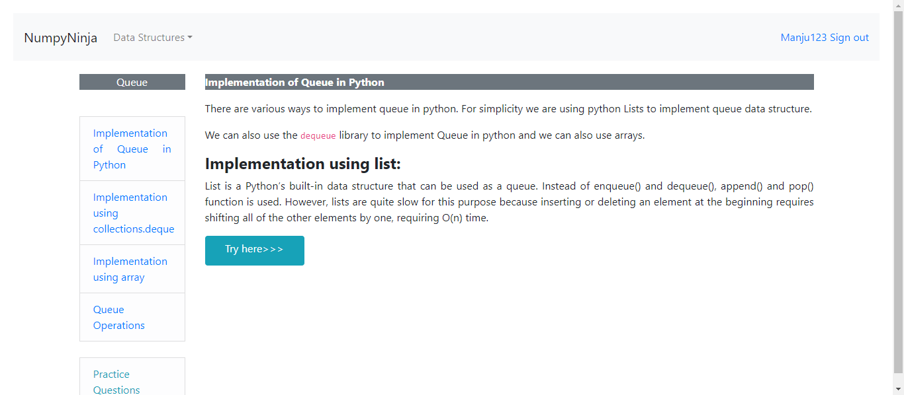
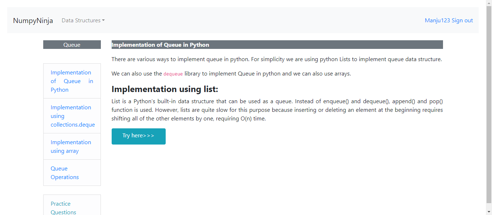

-
Feature for Stack Validation
6:46:16 PM / 00:00:32:533 Fail
Feature for Stack Validation
08.21.2023 6:46:16 PM 08.21.2023 6:46:48 PM 00:00:32:533 · #test-id=1I want to use this template for my feature fileFailUser enters Stack PageFailUser enters Stack PageGiven User logged in homepageWhen User select stack from dropdownThen User should be directed to Stack pageAnd "Stack" is displayed on pageAnd User checks for Topics covered in Stack pageGiven User is in Stack PageWhen User clicks for options "Operations in Stack" in stackdefenitions.Hooks.takeScreenshot(io.cucumber.java.Scenario)User_clicks_for_options_"Operations_in_Stack"_in_stackUser_clicks_for_options_"Operations_in_Stack"_in_stack Then User lands in Topics "Operations in Stack" in Stack PageStep skippedAnd Checks for links available in pageStep skippedWhen User clicks on Try Here buttonStep skippedThen User navigates to a page having TryEditor and Run ButtonStep skippedWhen User gets valid input from "inputs" and 1 to run a tryEditor codeStep skippedThen User is presented with run outputStep skippedGiven User is in Stack PageStep skippedWhen User clicks for options "Operations in Stack" in stackStep skippedAnd User clicks on link "Implementation" in the pageStep skippedWhen User clicks on Try Here buttonStep skippedThen User navigates to a page having TryEditor and Run ButtonStep skippedWhen User gets valid input from "inputs" and 1 to run a tryEditor codeStep skippedThen User is presented with run outputStep skippedFailUser enters Stack PageGiven User logged in homepageWhen User select stack from dropdownThen User should be directed to Stack pageAnd "Stack" is displayed on pageAnd User checks for Topics covered in Stack pageGiven User is in Stack PageWhen User clicks for options "Implementation" in stackThen User lands in Topics "Implementation" in Stack Pagedefenitions.Hooks.takeScreenshot(io.cucumber.java.Scenario)User_lands_in_Topics_"Implementation"_in_Stack_Page
Then User lands in Topics "Operations in Stack" in Stack PageStep skippedAnd Checks for links available in pageStep skippedWhen User clicks on Try Here buttonStep skippedThen User navigates to a page having TryEditor and Run ButtonStep skippedWhen User gets valid input from "inputs" and 1 to run a tryEditor codeStep skippedThen User is presented with run outputStep skippedGiven User is in Stack PageStep skippedWhen User clicks for options "Operations in Stack" in stackStep skippedAnd User clicks on link "Implementation" in the pageStep skippedWhen User clicks on Try Here buttonStep skippedThen User navigates to a page having TryEditor and Run ButtonStep skippedWhen User gets valid input from "inputs" and 1 to run a tryEditor codeStep skippedThen User is presented with run outputStep skippedFailUser enters Stack PageGiven User logged in homepageWhen User select stack from dropdownThen User should be directed to Stack pageAnd "Stack" is displayed on pageAnd User checks for Topics covered in Stack pageGiven User is in Stack PageWhen User clicks for options "Implementation" in stackThen User lands in Topics "Implementation" in Stack Pagedefenitions.Hooks.takeScreenshot(io.cucumber.java.Scenario)User_lands_in_Topics_"Implementation"_in_Stack_Page User_lands_in_Topics_"Implementation"_in_Stack_PageAnd Checks for links available in pageStep skippedWhen User clicks on Try Here buttonStep skippedThen User navigates to a page having TryEditor and Run ButtonStep skippedWhen User gets valid input from "inputs" and 1 to run a tryEditor codeStep skippedThen User is presented with run outputStep skippedGiven User is in Stack PageStep skippedWhen User clicks for options "Implementation" in stackStep skippedAnd User clicks on link "Operations in Stack" in the pageStep skippedWhen User clicks on Try Here buttonStep skippedThen User navigates to a page having TryEditor and Run ButtonStep skippedWhen User gets valid input from "inputs" and 1 to run a tryEditor codeStep skippedThen User is presented with run outputStep skippedFailUser enters Stack PageGiven User logged in homepageWhen User select stack from dropdownThen User should be directed to Stack pageAnd "Stack" is displayed on pageAnd User checks for Topics covered in Stack pageGiven User is in Stack PageWhen User clicks for options "Applications" in stackdefenitions.Hooks.takeScreenshot(io.cucumber.java.Scenario)User_clicks_for_options_"Applications"_in_stack
User_lands_in_Topics_"Implementation"_in_Stack_PageAnd Checks for links available in pageStep skippedWhen User clicks on Try Here buttonStep skippedThen User navigates to a page having TryEditor and Run ButtonStep skippedWhen User gets valid input from "inputs" and 1 to run a tryEditor codeStep skippedThen User is presented with run outputStep skippedGiven User is in Stack PageStep skippedWhen User clicks for options "Implementation" in stackStep skippedAnd User clicks on link "Operations in Stack" in the pageStep skippedWhen User clicks on Try Here buttonStep skippedThen User navigates to a page having TryEditor and Run ButtonStep skippedWhen User gets valid input from "inputs" and 1 to run a tryEditor codeStep skippedThen User is presented with run outputStep skippedFailUser enters Stack PageGiven User logged in homepageWhen User select stack from dropdownThen User should be directed to Stack pageAnd "Stack" is displayed on pageAnd User checks for Topics covered in Stack pageGiven User is in Stack PageWhen User clicks for options "Applications" in stackdefenitions.Hooks.takeScreenshot(io.cucumber.java.Scenario)User_clicks_for_options_"Applications"_in_stack User_clicks_for_options_"Applications"_in_stack
User_clicks_for_options_"Applications"_in_stack Then User lands in Topics "Applications" in Stack PageStep skippedAnd Checks for links available in pageStep skippedWhen User clicks on Try Here buttonStep skippedThen User navigates to a page having TryEditor and Run ButtonStep skippedWhen User gets valid input from "inputs" and 1 to run a tryEditor codeStep skippedThen User is presented with run outputStep skippedGiven User is in Stack PageStep skippedWhen User clicks for options "Applications" in stackStep skippedAnd User clicks on link "Applications" in the pageStep skippedWhen User clicks on Try Here buttonStep skippedThen User navigates to a page having TryEditor and Run ButtonStep skippedWhen User gets valid input from "inputs" and 1 to run a tryEditor codeStep skippedThen User is presented with run outputStep skippedFailTryEditor verification in each page for invalid codeFailTryEditor verification in each page for invalid codeGiven User logged in homepageWhen User select stack from dropdownThen User should be directed to Stack pageWhen User clicks for options "Operations in Stack" in stackThen User lands in Topics "Operations in Stack" in Stack PageAnd Checks for links available in pageWhen User clicks on Try Here buttonThen User navigates to a page having TryEditor and Run ButtonWhen User gets invalid input from "inputs" and 2 to run a tryEditor codeThen User gets error messageGiven User is in Stack PageWhen User clicks for options "Operations in Stack" in stackdefenitions.Hooks.takeScreenshot(io.cucumber.java.Scenario)User_clicks_for_options_"Operations_in_Stack"_in_stack
Then User lands in Topics "Applications" in Stack PageStep skippedAnd Checks for links available in pageStep skippedWhen User clicks on Try Here buttonStep skippedThen User navigates to a page having TryEditor and Run ButtonStep skippedWhen User gets valid input from "inputs" and 1 to run a tryEditor codeStep skippedThen User is presented with run outputStep skippedGiven User is in Stack PageStep skippedWhen User clicks for options "Applications" in stackStep skippedAnd User clicks on link "Applications" in the pageStep skippedWhen User clicks on Try Here buttonStep skippedThen User navigates to a page having TryEditor and Run ButtonStep skippedWhen User gets valid input from "inputs" and 1 to run a tryEditor codeStep skippedThen User is presented with run outputStep skippedFailTryEditor verification in each page for invalid codeFailTryEditor verification in each page for invalid codeGiven User logged in homepageWhen User select stack from dropdownThen User should be directed to Stack pageWhen User clicks for options "Operations in Stack" in stackThen User lands in Topics "Operations in Stack" in Stack PageAnd Checks for links available in pageWhen User clicks on Try Here buttonThen User navigates to a page having TryEditor and Run ButtonWhen User gets invalid input from "inputs" and 2 to run a tryEditor codeThen User gets error messageGiven User is in Stack PageWhen User clicks for options "Operations in Stack" in stackdefenitions.Hooks.takeScreenshot(io.cucumber.java.Scenario)User_clicks_for_options_"Operations_in_Stack"_in_stack User_clicks_for_options_"Operations_in_Stack"_in_stack
User_clicks_for_options_"Operations_in_Stack"_in_stack And User clicks on link "Implementation" in the pageStep skippedWhen User clicks on Try Here buttonStep skippedThen User navigates to a page having TryEditor and Run ButtonStep skippedWhen User gets invalid input from "inputs" and 2 to run a tryEditor codeStep skippedThen User gets error messageStep skippedGiven User is in Stack PageStep skippedWhen User clicks for options "Operations in Stack" in stackStep skippedAnd clicks on Practice questionsStep skippedThen User navigates to Practice questions PageStep skippedFailTryEditor verification in each page for invalid codeGiven User logged in homepageWhen User select stack from dropdownThen User should be directed to Stack pageWhen User clicks for options "Implementation" in stackThen User lands in Topics "Implementation" in Stack PageAnd Checks for links available in pageWhen User clicks on Try Here buttonThen User navigates to a page having TryEditor and Run ButtonWhen User gets invalid input from "inputs" and 2 to run a tryEditor codeThen User gets error messageGiven User is in Stack PageWhen User clicks for options "Implementation" in stackAnd User clicks on link "Operations in Stack" in the pagedefenitions.Hooks.takeScreenshot(io.cucumber.java.Scenario)User_clicks_on_link_"Operations_in_Stack"_in_the_pageUser_clicks_on_link_"Operations_in_Stack"_in_the_page
And User clicks on link "Implementation" in the pageStep skippedWhen User clicks on Try Here buttonStep skippedThen User navigates to a page having TryEditor and Run ButtonStep skippedWhen User gets invalid input from "inputs" and 2 to run a tryEditor codeStep skippedThen User gets error messageStep skippedGiven User is in Stack PageStep skippedWhen User clicks for options "Operations in Stack" in stackStep skippedAnd clicks on Practice questionsStep skippedThen User navigates to Practice questions PageStep skippedFailTryEditor verification in each page for invalid codeGiven User logged in homepageWhen User select stack from dropdownThen User should be directed to Stack pageWhen User clicks for options "Implementation" in stackThen User lands in Topics "Implementation" in Stack PageAnd Checks for links available in pageWhen User clicks on Try Here buttonThen User navigates to a page having TryEditor and Run ButtonWhen User gets invalid input from "inputs" and 2 to run a tryEditor codeThen User gets error messageGiven User is in Stack PageWhen User clicks for options "Implementation" in stackAnd User clicks on link "Operations in Stack" in the pagedefenitions.Hooks.takeScreenshot(io.cucumber.java.Scenario)User_clicks_on_link_"Operations_in_Stack"_in_the_pageUser_clicks_on_link_"Operations_in_Stack"_in_the_page When User clicks on Try Here buttonStep skippedThen User navigates to a page having TryEditor and Run ButtonStep skippedWhen User gets invalid input from "inputs" and 2 to run a tryEditor codeStep skippedThen User gets error messageStep skippedGiven User is in Stack PageStep skippedWhen User clicks for options "Implementation" in stackStep skippedAnd clicks on Practice questionsStep skippedThen User navigates to Practice questions PageStep skippedFailTryEditor verification in each page for invalid codeGiven User logged in homepageWhen User select stack from dropdownThen User should be directed to Stack pageWhen User clicks for options "Applications" in stackThen User lands in Topics "Applications" in Stack PageAnd Checks for links available in pageWhen User clicks on Try Here buttonThen User navigates to a page having TryEditor and Run ButtonWhen User gets invalid input from "inputs" and 2 to run a tryEditor codeThen User gets error messageGiven User is in Stack PageWhen User clicks for options "Applications" in stackdefenitions.Hooks.takeScreenshot(io.cucumber.java.Scenario)User_clicks_for_options_"Applications"_in_stack
When User clicks on Try Here buttonStep skippedThen User navigates to a page having TryEditor and Run ButtonStep skippedWhen User gets invalid input from "inputs" and 2 to run a tryEditor codeStep skippedThen User gets error messageStep skippedGiven User is in Stack PageStep skippedWhen User clicks for options "Implementation" in stackStep skippedAnd clicks on Practice questionsStep skippedThen User navigates to Practice questions PageStep skippedFailTryEditor verification in each page for invalid codeGiven User logged in homepageWhen User select stack from dropdownThen User should be directed to Stack pageWhen User clicks for options "Applications" in stackThen User lands in Topics "Applications" in Stack PageAnd Checks for links available in pageWhen User clicks on Try Here buttonThen User navigates to a page having TryEditor and Run ButtonWhen User gets invalid input from "inputs" and 2 to run a tryEditor codeThen User gets error messageGiven User is in Stack PageWhen User clicks for options "Applications" in stackdefenitions.Hooks.takeScreenshot(io.cucumber.java.Scenario)User_clicks_for_options_"Applications"_in_stack User_clicks_for_options_"Applications"_in_stackAnd User clicks on link "Applications" in the pageStep skippedWhen User clicks on Try Here buttonStep skippedThen User navigates to a page having TryEditor and Run ButtonStep skippedWhen User gets invalid input from "inputs" and 2 to run a tryEditor codeStep skippedThen User gets error messageStep skippedGiven User is in Stack PageStep skippedWhen User clicks for options "Applications" in stackStep skippedAnd clicks on Practice questionsStep skippedThen User navigates to Practice questions PageStep skipped
User_clicks_for_options_"Applications"_in_stackAnd User clicks on link "Applications" in the pageStep skippedWhen User clicks on Try Here buttonStep skippedThen User navigates to a page having TryEditor and Run ButtonStep skippedWhen User gets invalid input from "inputs" and 2 to run a tryEditor codeStep skippedThen User gets error messageStep skippedGiven User is in Stack PageStep skippedWhen User clicks for options "Applications" in stackStep skippedAnd clicks on Practice questionsStep skippedThen User navigates to Practice questions PageStep skipped
-
org.openqa.selenium.NoSuchElementException
5 tests
org.openqa.selenium.NoSuchElementException
5 failedStatus Timestamp TestName Fail 18:46:20 PM When User clicks for options "Operations in Stack" in stack Feature for Stack Validation.User enters Stack Page.When User clicks for options "Operations in Stack" in stackFail 18:46:28 PM When User clicks for options "Applications" in stack Feature for Stack Validation.User enters Stack Page.When User clicks for options "Applications" in stackFail 18:46:34 PM When User clicks for options "Operations in Stack" in stack Feature for Stack Validation.TryEditor verification in each page for invalid code.When User clicks for options "Operations in Stack" in stackFail 18:46:42 PM And User clicks on link "Operations in Stack" in the page Feature for Stack Validation.TryEditor verification in each page for invalid code.And User clicks on link "Operations in Stack" in the pageFail 18:46:48 PM When User clicks for options "Applications" in stack Feature for Stack Validation.TryEditor verification in each page for invalid code.When User clicks for options "Applications" in stack -
java.lang.AssertionError
1 tests
java.lang.AssertionError
1 failedStatus Timestamp TestName Fail 18:46:24 PM Then User lands in Topics "Implementation" in Stack Page Feature for Stack Validation.User enters Stack Page.Then User lands in Topics "Implementation" in Stack Page
Started
Aug 21, 2023 06:46:15 PM
Ended
Aug 21, 2023 06:46:48 PM
Features Passed
0
Features Failed
1
Features
Scenarios
Steps
Timeline